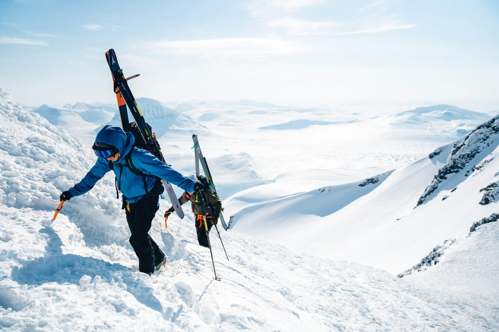
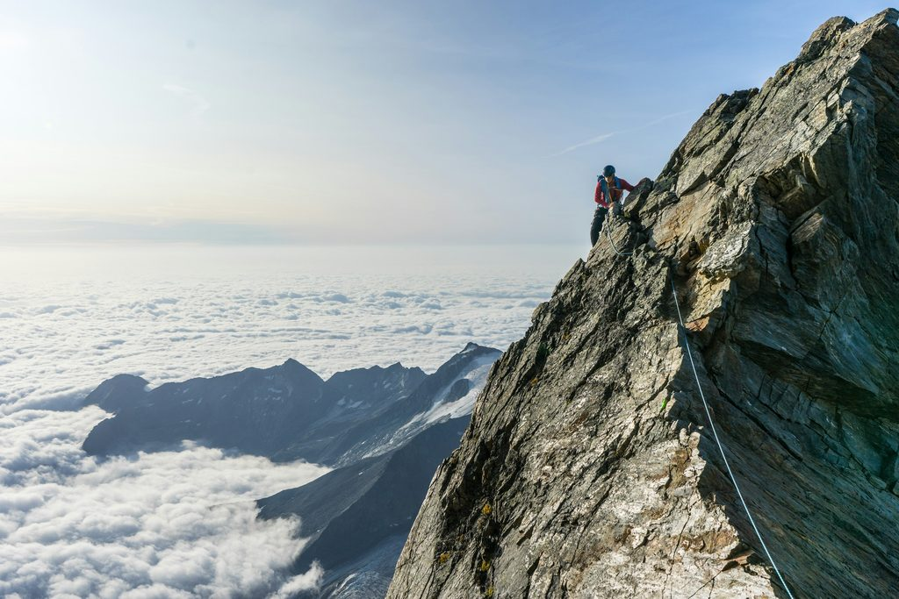
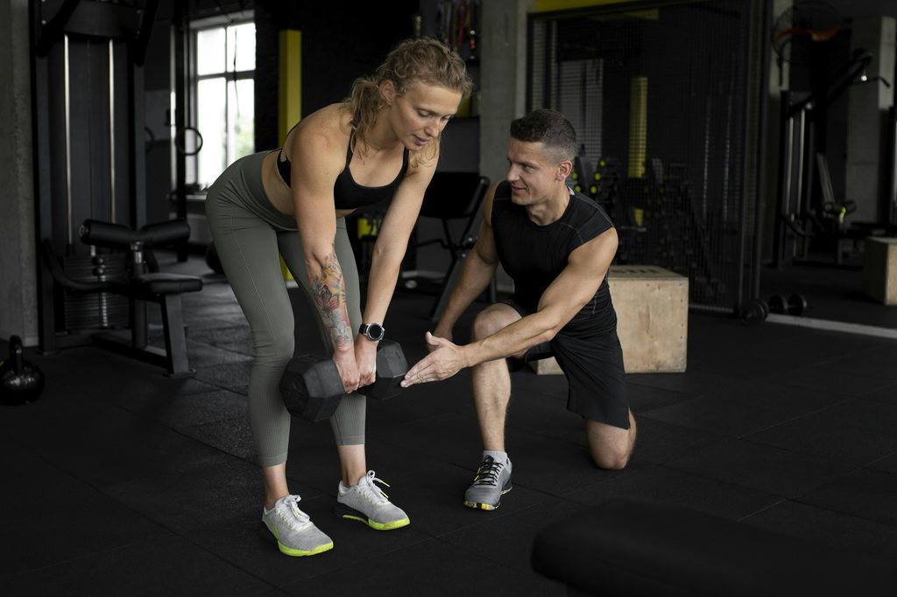

Sportphysiotherapie · Hallenbad Amras · Innsbruck
Physiotherapie Innsbruck Zurück auf den Berg.
Wir finden mit dir die Ursache deiner Beschwerden und bauen dich Etappe für Etappe wieder auf – nach dem Kreuzbandriss, der Sehnen- oder Muskelverletzung, oder wenn der Rücken nicht mehr mitspielt. Bis du wieder läufst, aufsteigst, kletterst.
47.2650° N · 11.4029° E — Amraser Straße 3, 1. Stock
Die Praxis in Zahlen
- 320 m²Praxis
- 160 m²Trainingsbereich
- 4Spezialist:innen
- Unterwassertherapieim Hallenbad Amras
Return to Sport · Return to Running
Vom Reha-Raum
zurück auf den Trail.
Sportphysiotherapie in Innsbruck heißt: Deine Ziele liegen meist weit über dem Inn. Darum endet Therapie bei uns nicht, wenn der Alltag wieder klappt – sondern wenn du dich in deinem Sport wieder sicher fühlst.
-
Laufen
Return to Running: der schrittweise Wiedereinstieg – vom ersten lockeren Lauf bis zum Trail mit Höhenmetern.
-

Skitour
Kraft, Stabilität und Ausdauer für Aufstieg und Abfahrt – mit Knie, Hüfte und Rücken im Blick.
-

Klettern
Schulter, Hand und Rumpf gezielt belastbar machen. Therapieklettern ist einer der Schwerpunkte von Anna Gassner.
Kreuzband-Reha · konservativ oder nach OP
Dein Höhenprofil zurück in den Sport
Eine Kreuzband-Reha ist keine Gerade, sondern ein Aufstieg mit Etappen. Jede Etappe hat ein klares Ziel – weiter geht es, wenn du so weit bist, nicht nach Kalender.
- Etappe 1
Schützen & beruhigen
Schwellung und Reizung im Blick behalten, das Knie entlasten, Vertrauen in die Bewegung aufbauen.
- Etappe 2
Beweglichkeit & Ansteuerung
Streckung und Beugung zurückgewinnen, die Oberschenkelmuskulatur wieder gezielt ansteuern.
- Etappe 3
Kraft & Stabilität
Medizinische Trainingstherapie im Trainingsbereich: Kraft, Gleichgewicht und Beinachse aufbauen.
- Etappe 4
Laufen & Springen
Return to Running, Sprünge und Landungen – kontrolliert und Schritt für Schritt intensiver.
- Gipfel
Return to Sport
Richtungswechsel, Tempo, sportartspezifische Belastung – bis wir gemeinsam sagen: Du bist bereit.
Bewusst ohne Zeitangaben: Wie lange eine Etappe dauert, hängt von deiner Verletzung, einer eventuellen Operation und deinem Körper ab. Das Profil zeigt den Weg – das Tempo bestimmen wir gemeinsam mit dir.

Dein Ansprechpartner für Sportverletzungen
Kreuzband, Sehne, Bänder, Muskel.
Simon Klein ist auf Sportphysiotherapie und Return to Sport/Running spezialisiert: konservative und post-operative Reha nach Kreuzbandriss, Sehnen-, Kapsel-/Band- und Muskelverletzungen – ergänzt durch Medizinische Trainingstherapie und Laserbehandlung mit medizinischem Stablaser.
Armin Hauser bringt die Ausbildung in European Sports Physiotherapy (ESP) mit. Zwei Sportphysios, ein Ziel: dass du wieder draußen bist.
Reha-Termin anrufenLeistungen · Physiotherapie Amras / Pradl
Alles in
einer Hand.
Zehn Werkzeuge, ein Team. Ob orthopädisch-traumatologische Reha, Sportverletzung oder Beckenboden – wir kombinieren, was du brauchst, statt dich weiterzuschicken.
-
Sport
Sportphysiotherapie & Return to Sport / Running
Vom ersten Reha-Schritt bis zur vollen Belastung in deinem Sport.
-
Training
Medizinische Trainingstherapie
Gezieltes, begleitetes Training im 160 m² großen Trainingsbereich – für Kraft, Stabilität und Ausdauer.
-
Bewegung
Mobilisierende Physiotherapie
Gelenke, Wirbelsäule und Gewebe wieder beweglich machen – mit den Händen und mit Übungen für zuhause.
-
Wasser
Unterwassertherapie
Bewegen im Wasser des Hallenbads Amras: Der Auftrieb entlastet, der Wasserwiderstand fordert.
-
Rücken
Komplexe Rückenschmerzen (CFT nach Prof. O’Sullivan)
Cognitive Functional Therapy: Wir schauen auf Bewegung, Belastung und Alltag – nicht nur auf die Wirbelsäule.
-
Gleichgewicht
Schwindel- & Vestibulartherapie (IVRT®)
Gezielte Untersuchung und Behandlung bei Schwindel und Gleichgewichtsproblemen.
-
Beckenboden
Beckenbodenphysiotherapie
Für Frauen und Männer – diskret und fachkundig, mit Anna Gassner, MSc.
-
Hands-on
Heilgymnastik & Heilmassage
Übungen, die zu deinem Befund passen, und Massage zur Lockerung von Muskulatur und Gewebe.
-
Hands-on
Manuelle Lymphdrainage
Sanfte Grifftechnik, die den Lymphabfluss unterstützt – etwa bei Schwellungen nach Verletzung oder OP.
-
Ergänzend
Elektrotherapie
Als Ergänzung zur aktiven Therapie – zur Unterstützung bei Schmerzen oder zur Muskelaktivierung.

Beckenbodentherapie Innsbruck
Die Mitte, über die
kaum jemand spricht.
Die Beckenbodenmuskulatur stabilisiert deine Körpermitte und wirkt bei essenziellen Körperfunktionen mit – bei Frauen und Männern, in jedem Alter. Auch bei jedem Laufschritt und jeder Landung arbeitet sie mit.
Anna Gassner, MSc, ist auf Beckenbodenphysiotherapie spezialisiert: in Schwangerschaft und Rückbildung, bei Inkontinenz, Senkungen oder Schmerzen – und vor und nach einer Prostata-Operation.
Mehr zur BeckenbodentherapieTeam
Deine
Seilschaft.
Vier Physiotherapeut:innen mit unterschiedlichen Schwerpunkten – orthopädisch-traumatologisch, sportphysiotherapeutisch, Beckenboden. Wer dich behandelt, hängt davon ab, was du brauchst.
-

Simon Klein
Physiotherapeut · Sport & Return to Sport
„Mich begeistert es besonders, deinen Körper genau unter die Lupe zu nehmen. Finden wir gemeinsam die Ursachen für deine Beschwerden und bringen dich zurück in einen beschwerdefreien Alltag oder Sport!“
- Sportphysiotherapie
- Manuelle Therapie
- Medizinische Trainingstherapie
- Return to Sport / Running
- Konservative & post-OP Reha nach Kreuzbandriss
- Sehnen-, Kapsel-/Band- und Muskelverletzungen
- Laserbehandlung mit med. Stablaser
-

Armin Hauser
Physiotherapeut · Manuelle Therapie & Sport
„Sei die beste Version deiner selbst! Ich unterstütze dich mit all meiner Erfahrung und physiotherapeutischen Möglichkeiten!“
- Manuelle Therapie nach Maitland
- Fasziendistorsionsmodell (FDM)
- PNF
- European Sports Physiotherapy (ESP)
- Manuelle Lymphdrainage
-

Anna Gassner, MSc
Physiotherapeutin · Beckenboden & Reha
„Ich begleite dich auf dem Weg, deinen eigenen Körper besser kennenzulernen und zu verstehen. Ich freue mich darauf, dir zu helfen, dein volles Potential auszuschöpfen.“
- Beckenbodenphysiotherapie (MSc)
- Orthopädische & traumatologische Rehabilitation
- Blackroll-Trainerin & Faszienyoga
- Therapieklettern
- Manuelle Lymphdrainage
-

Simon Braun
Physiotherapeut · Schwindel & Rücken
„Gezielt behandeln. Ganzheitlich denken. Moderne Physiotherapie mit Erfahrung und Empathie.“
- IVRT® Schwindel- & Vestibulartherapie
- Komplexe Rückenschmerzen (CFT, Prof. O’Sullivan)
- Orthopädische & traumatologische Reha
- Masterlehrgang Physiotherapie
- Maitland-Zertifikat (IMTA)
- Mulligan Concept
- FDM
- Manuelle Lymphdrainage


Ablauf & Kosten
Vier Etappen
bis zur Rückerstattung.
Wir sind Wahltherapeut:innen. Das heißt: Du bezahlst die Behandlung zuerst bei uns und holst dir einen Teil bei deiner Krankenkasse zurück. So läuft es ab.
-
Überweisung holen
Lass dir von deiner Ärztin oder deinem Arzt eine Zuweisung bzw. Überweisung für Physiotherapie ausstellen und bring sie mit.
-
Termin vereinbaren
Ruf uns an unter 0512 / 36 60 02 oder schreib an info@phit.cc.
-
Behandlung
Wir verrechnen Privattarife – als Wahltherapeut:innen ohne Direktverrechnung mit der Kasse. [PLATZHALTER: Tarifübersicht]
-
Rechnung einreichen
Reiche die Rechnung bei deiner Kasse ein und erhalte eine anteilige Rückerstattung – laut bisherigen Angaben ca. 55 € pro Therapiestunde. [BITTE PRÜFEN]
Räumlichkeiten & Training
320 m² Praxis.
Ein Hallenbad im Haus.
Die Hälfte unserer Fläche ist Trainingsbereich: 160 m² unter hohen Rundbogenfenstern, mit Kraftgeräten und Platz für Matten. Und weil die Praxis im Städtischen Hallenbad Amras liegt, ist das Wasser nur ein paar Schritte entfernt.



-
Adresse
Amraser Straße 3, 1. Stock
6020 Innsbruck – im Städtischen Hallenbad Amras -
Eingang
Haupteingang Hallenbad, im 1. Stock links.
-
Parken
Gratis Parkplätze hinter dem Gebäude.
-
Öffis
Haltestelle „Leipziger Platz“.
-
Öffnungszeiten
[PLATZHALTER: Öffnungszeiten]
-
Barrierefreiheit / Lift
[PLATZHALTER: Barrierefreiheit / Lift]

Karriere · für selbstständige Physios
Raum
zu vermieten.
Du bist selbstständige Physiotherapeutin oder selbstständiger Physiotherapeut und suchst einen eigenen, ausgestatteten Therapieraum in Innsbruck? Komm in unser Team im Hallenbad Amras.
Jetzt melden: info@phit.ccWas dich erwartet
- Freie Zeiteinteilung
- 160 m² Trainingsraum
- Eigener, ausgestatteter Therapieraum
- Bestehende Praxissoftware
- Top-Lage mit Öffis und Gratisparkplätzen
- Bestehender Patientenstamm & interdisziplinäres Arbeiten
- Marketing-Unterstützung und Listung auf der Website
- Gemeinschaftsküche & Pausenraum
- WLAN
Was du mitbringst
- Abgeschlossene Ausbildung
- Freude an der Selbstständigkeit
- Anspruch an hochwertige Betreuung
Häufige Fragen
Kurz
gefragt.
Brauche ich eine Überweisung?
Ja – bring bitte eine ärztliche Zuweisung bzw. Überweisung mit. Sie ist auch die Grundlage dafür, dass du später einen Teil der Kosten von der Kasse zurückbekommst.
Was zahlt die Krankenkasse?
Wir sind Wahltherapeut:innen und verrechnen Privattarife, ohne Direktverrechnung mit der Kasse. Du reichst unsere Rechnung bei deiner Kasse ein und erhältst eine anteilige Rückerstattung – laut bisherigen Angaben ca. 55 € pro Therapiestunde. [BITTE PRÜFEN]
Gilt die normale Überweisung auch für Beckenbodentherapie?
Ja. Eine normale Überweisung (z. B. PT03, Heilgymnastik) gilt auch für die Beckenbodentherapie. Sie wird wie Physiotherapie verrechnet.
Wo parke ich?
Hinter dem Gebäude gibt es gratis Parkplätze.
Wie komme ich mit den Öffis hin?
Die nächste Haltestelle ist „Leipziger Platz“. Die Praxis liegt im Städtischen Hallenbad Amras: Haupteingang, dann im 1. Stock links.
Wann habt ihr geöffnet?
[PLATZHALTER: Öffnungszeiten] – am schnellsten erreichst du uns telefonisch unter 0512 / 36 60 02.
Kontakt
Ruf an.
Wir planen deinen Aufstieg.
0512 / 36 60 02
Amraser Straße 3, 1. Stock · 6020 Innsbruck
im Städtischen Hallenbad Amras